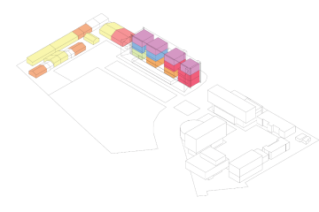
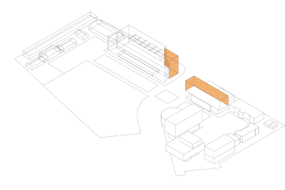
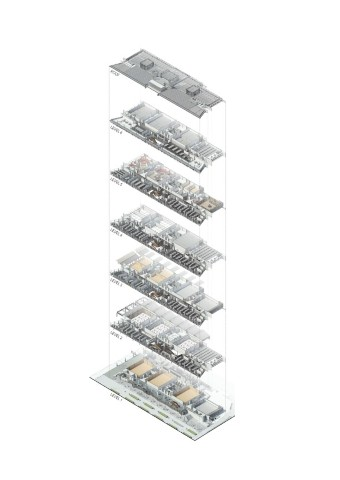
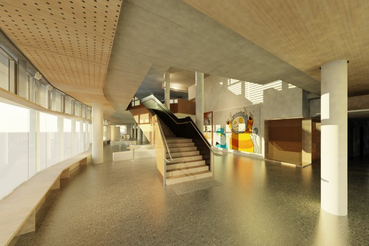
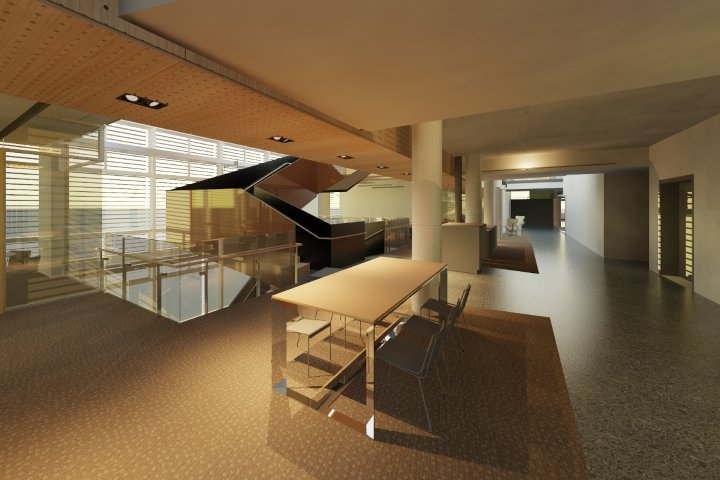
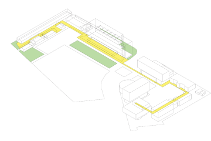
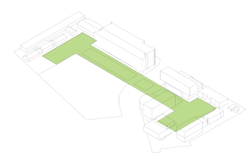
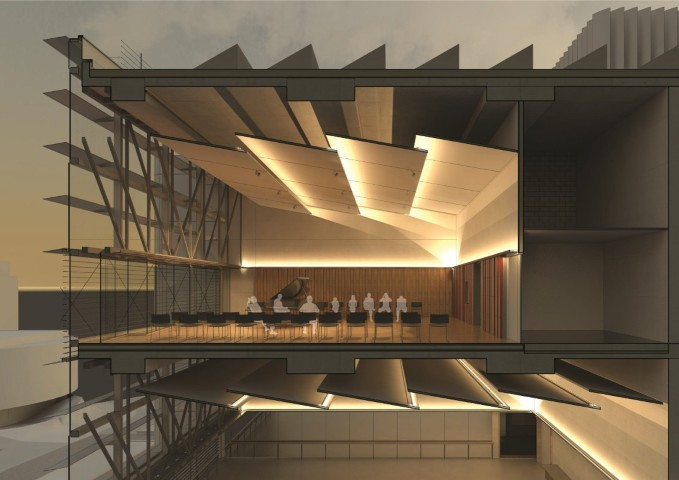
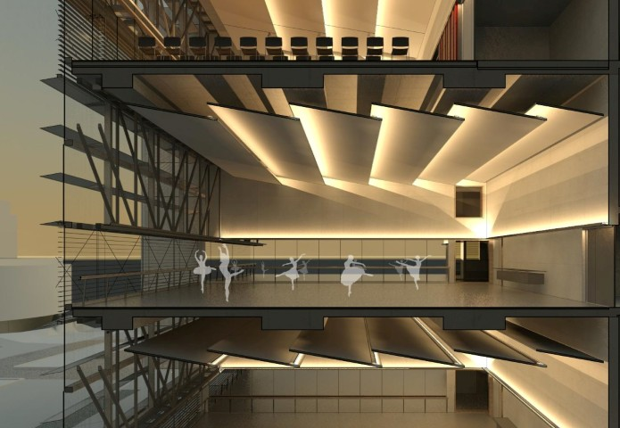

Creative Industries Precinct Phase 2 (CIP2) is an expansion of the CIP1 development at the Kelvin Grove Campus of the Queensland University of Technology. By developing the lands surrounding the remainder of Gona Parade the project aims to create a unified arts precinct.
CIP2 is located on the southern portion of Gona Parade, and encompasses both the reuse of existing historic barracks buildings as well as the addition of a new purpose built 6 storey facility. The new campus occupies the Western and Southern edges of Gona Parade on 2 separate Lots: Lot 2 assigned to accommodate Dance, Drama, Music, and Administration, and Lot 3 which will accommodate the Visual Arts Component. The new building will act as a gateway to the Kelvin Grove Campus.
The program to be accommodated includes the disciplines of Dance, Drama, Music, Visual Arts and Faculty Administration. Visual Arts has been assigned to the reused barracks buildings as well as a new one storey purpose built facility. The remainder of the faculties will be accommodated within the new 6 storey Lot 2 building.








